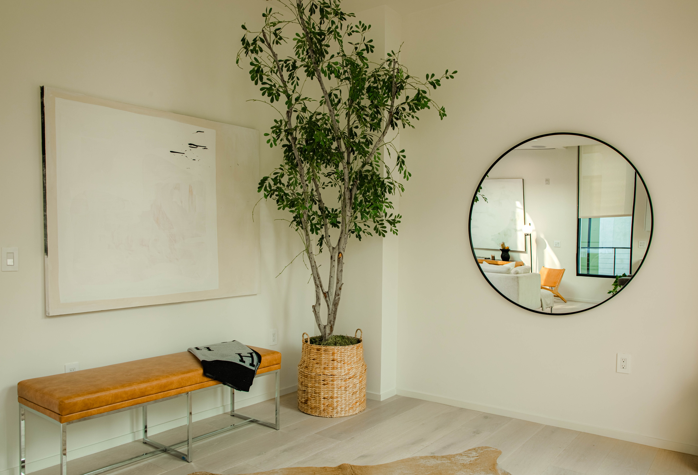

CLASES - Modalidades

Somos un estudio presencial y en línea que ofrece clases de yoga para todos aquellos que quieran comenzar, practicar o perfeccionar su práctica.
Nuestro estudio presencial se encuentra en el barrio de Recoleta, Capital Federal y además contamos con cursos online y on demand.
Clases virtuales
Tenemos 2 modalidades, clases virtuales en vivo y on demand, vas a poder elegir entre nuestra basta selección ¡cuando quieras!Clases individuales
Una clase 100% personalizada y dedicada para vos con un profesor de tu elección.Clases grupales
Clases en grupo con un máximo de 7 personas por estudio. Podes reservar con antelación vía mail o formulario de contacto.QUIENES SOMOS

Studio Zen nace en el 2020 en plena pandemia como una opción virtual para romper con la estructura presencial y mantenerse activo donde sea y cuando sea.
Luego de la apertura post-covid decidimos abrir un studio presencial en el barrio de Recoleta para recibir a todos nuestros estudiantes e invitamos a todo aquel que quiera acercarse y formar parte de nuestra comunidad Zen.
-
Fundadoras de Zen Studio
• Camila Uriburu, foto y @cami_uriburuzen
• Rosario Fuentes, foto @rofuentes_zen
NUESTRO ESTUDIO
Contamos con una sede en el barrio de Recoleta (Av. Pueyrredon 1970)
Nuestros horarios de atención al público son de lunes a viernes de 10hs a 19hs, podes acercarte a conocernos y reservar tu primer clase gratis en el horario estipulado o vía mail o formulario web.
Zen Studio cuenta con dos espacios de ejercicio, baño equipado con duchas y lockers para guardar tus pertenencias (recordá traer tu candado) y un rest room para descansar entre clases.

NUESTROS PROFESORES

MEMBRESIAS
Membresía virtual - ¿Qué está incluido?
• 1 clase nueva todos los días
• Nuevas listas de reproducción de práctica seleccionadas y tutoriales cada mes
•Clases descargables para practicar en cualquier momento y en cualquier lugar
Valor membresía virtual - Mensual $5.000 Anual $60.000
Membresía presencial - ¿Qué está incluido?
• 2 clases por semana al mes
• Playlist de la clase del día
Valor membresía presencial - Por clase $750 Mensual $7500
Membresia anual presencial- ¿Qué está incluido?
• 10 clases por mes, un total de 120 clases al año
• De regalo un mat personalizado con tu nombre y color a elección
• Descargables de ejercicios para estirar, practicar y ejercitarte donde estés
Valor membresía anual- $90.000
PREGUNTAS FRECUENTES (FAQS)
¿Cómo debo prepararme para mi primera clase?
Llegue al estudio 15 minutos antes de que comience la clase. Traiga su identificación con foto junto con una colchoneta, una toalla, una botella de agua y un candado opcional.
¿Cómo debería vestirme?
Use ropa sencilla y transpirable que no limite su rango de movimiento. Un outfit que usaría para correr en un día cálido funcionará bien para la mayoría de nuestras clases activas. No se permiten zapatos en la sala de yoga y no recomendamos usar medias durante la práctica.
¿Algún consejo para mi primera clase?
Un buen lugar para colocar la mat de yoga es en la parte trasera de la habitación, cerca de una puerta o pared lateral para que puedas usar a otros estudiantes como guía mientras practicas. También lo alentamos a que le informe al instructor que es su primera vez. Estarán encantados de brindarle orientación y asistencia adicional durante la clase para garantizar que practique yoga de manera segura.
¿Cuándo debo llegar?
Llegue aproximadamente 10-15 minutos antes para su primera visita. Esto permitirá suficiente tiempo para el registro y una breve orientación o preguntas antes de que comience la clase. Las puertas se abren 15 minutos antes de la hora de inicio de la clase. Sea respetuoso con los estudiantes que actualmente están en práctica mientras espera que comience su clase.
¿Cuáles son algunos de los beneficios del yoga?
Hay innumerables beneficios para nuestro estilo de yoga. Convertirás el estrés en sudor, lo rígido en fluido, y nuestra comunidad puede convertir a extraños en amigos.
¿Puedo reservar una sesión privada o con un grupo pequeño?
¡Por supuesto! Trabajar uno a uno es una excelente manera de profundizar en las necesidades únicas de su práctica con un maestro. Comuníquese con cualquiera de nuestros maestros experimentados para programar una sesión de yoga privada o en grupos pequeños. Las tarifas varían según el maestro y el tamaño del grupo.
¿Cuáles son los métodos de pago)
Aceptamos tarjetas de débito/crédito y mercadopago.